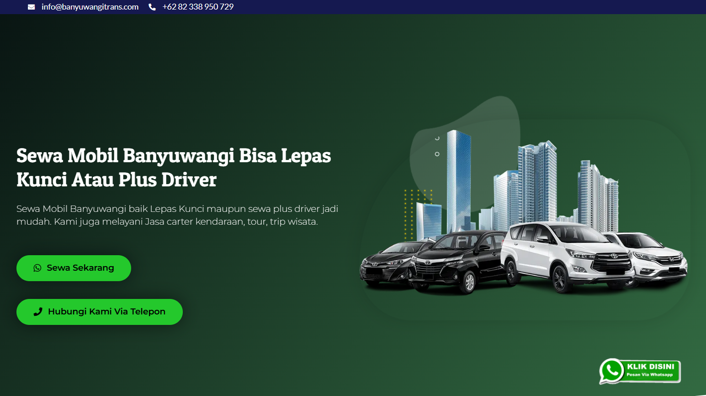

Banyuwangi Trans
Transportation Website Design
Project Overview
Banyuwangi Trans is a transportation website project that showcases transportation services in Banyuwangi. The website provides information about various transportation options, booking services, and route planning for travelers and locals in the Banyuwangi area.
Key Features
- Comprehensive transportation service listings
- Route planning and scheduling information
- Booking system for transportation services
- User-friendly interface for easy navigation
Project Gallery
Fleet
Services
Home Page